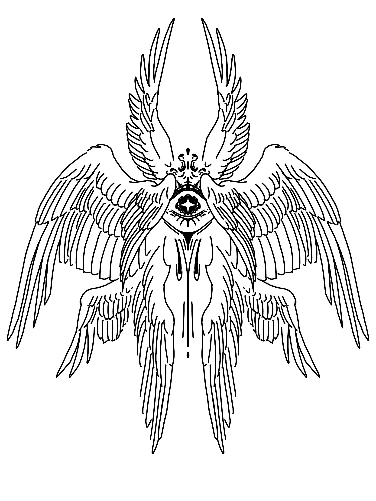
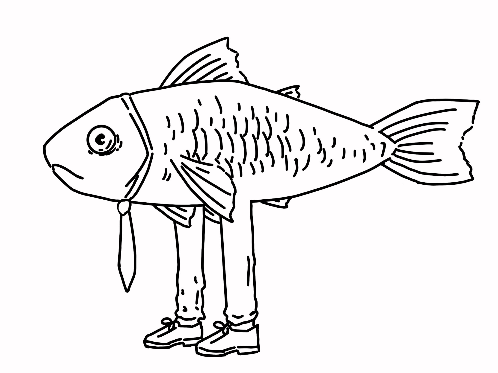
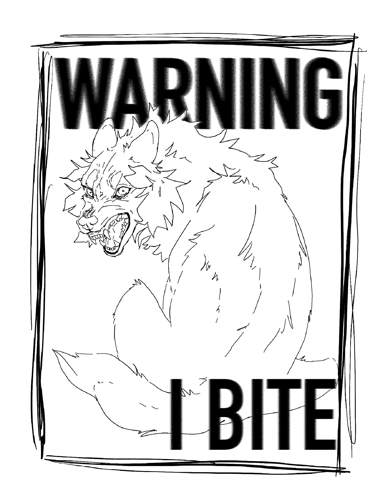
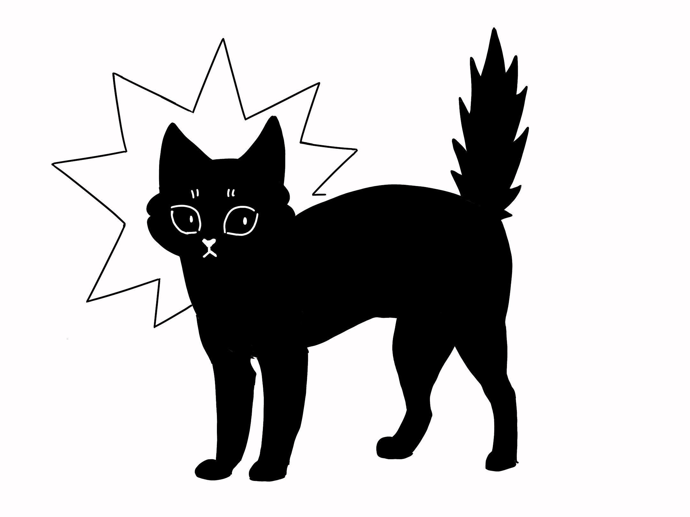

En collaboration avec une friperie locale, mon maître de stage et moi-même avons mis en place un stand de sérigraphie participatif. L'objectif était de proposer une expérience de personnalisation immédiate : les clients apportaient une pièce de seconde main et nous réalisions l'impression du visuel de leur choix sous leurs yeux.
Responsable du projet de A à Z, j'ai assuré aussi bien la conception visuelle que la préparation technique du matériel (cadres de sérigraphie). J'ai également géré l'aspect opérationnel lors de l'événement, incluant l'impression en direct et l'accueil du public.
L'enjeu était de maximiser l'attractivité du stand en diversifiant l'offre. En concevant des illustrations de tailles variables, nous avons pu adapter nos tarifs et séduire une clientèle aux attentes et aux budgets variés.
L'enjeu était de proposer une collection de visuels aux thématiques variées afin de séduire un public large.
Mon processus de création a commencé par une série de recherches rapides pour identifier les idées les plus fortes. Une fois ces concepts approfondis et validés par mon tuteur, j'ai procédé à l'encrage et aux finitions de chaque illustration pour garantir un résultat professionnel.
Une fois cela fait, j'ai pu les adapter pour la sérigraphie sur photoshop et préparer les cadres



